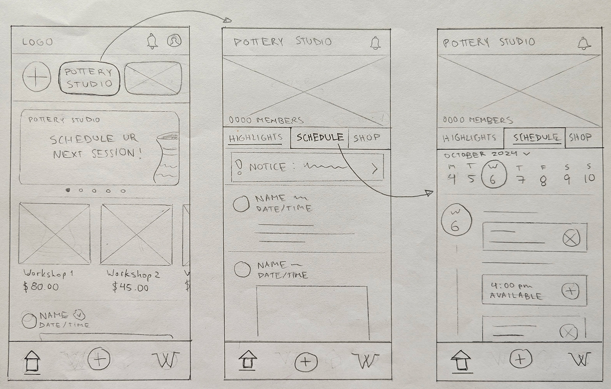

An App to upload pottery projects, share progress, and learn about studio activities.
Problem Statement
There’s a lack of communication about any tests being done by members of the same pottery studio. This means many members might be repeating the same processes and wasting time, space, and materials unnecessarily. There’s an opportunity to optimize their processes and make use of their collective knowledge.
User Research
Interviewee:
Michelle, UX Design student
Diverse interests that require time investment and some planning
Setting:
In person
Duration:
~16 minutes
“It would be nice if there was like a forum or a place, a database. Like you can upload [a picture] and ‘Oh, it looks like this’.”
User Persona
Visiting a pottery studio
Goals of the study:
Experience booking a class at a pottery studio
Understand the actions and behaviors of people inside a ceramic studio within Vancouver, BC, Canada.
Findings:
Tutorial videos were provided by email after initial deposit/ before class
Limited time to use phones/ electronic devices: even watches were taken off.
Everyone ends up focusing on their own project despite going in pairs/groups
Taking pictures (before/after class) was encouraged by the teacher
Solution
An app to upload pottery projects, share progress, and learn about studio activities.
User Flows
Tasks were defined, which were then broken down into steps that were built into user flows.
Task: Adding a new project from your profile
Paper Prototyping
Started to define the main features:
Documenting projects
Sharing progress with studio members
Learning about pottery
Is a profile needed? How much interaction will there be between users?
General agreement about tabs needing improvement – make them more intuitive and/or add labels
Wireframes
High-fidelity Prototyping
Features were added based on the insights obtained from the user interviews and direct feedback for the wireframes.